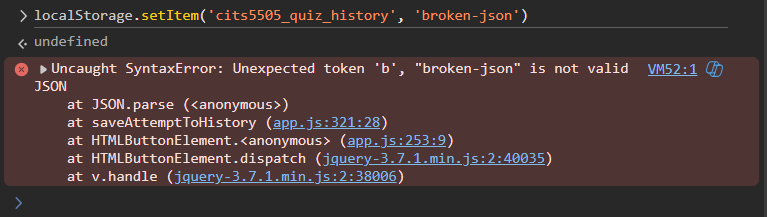

Overview of AI Usage
During the development of this web application, I utilized Large Language Models (specifically ChatGPT/Gemini) as a pair-programming assistant. While AI significantly accelerated boilerplate generation and syntax troubleshooting, I quickly learned that its outputs cannot be trusted blindly. This log documents specific instances where AI was used, how its output was modified, and a critical analysis of its limitations.
Use Case 1: Array Randomisation Algorithm
"Write a JavaScript function to randomly shuffle an array of quiz questions."
The AI suggested using the built-in Array.prototype.sort() method combined with Math.random().
function shuffle(array) {
return array.sort(() => Math.random() - 0.5);
}I rejected this output. The sort() method is not truly random and introduces statistical bias depending on the browser's sorting algorithm implementation. Instead, I implemented the Fisher-Yates Shuffle algorithm(uniform shuffling algorithm) in app.js.
function shuffleArray(array) {
for (let i = array.length - 1; i > 0; i--) {
const j = Math.floor(Math.random() * (i + 1));
[array[i], array[j]] = [array[j], array[i]];
}
}Use Case 2: The Incorrect Assumption That LocalStorage Data Is Always Valid
Critical Evaluation Requirement
This section highlights a scenario where the AI provided code that appeared correct and worked during normal testing, but failed when client-side data had been corrupted or was no longer valid JSON.
"How do I save the user's quiz score object to LocalStorage in JavaScript?"
The AI provided a standard implementation using JSON.stringify() and localStorage.setItem().
function saveScore(scoreObj) {
let history = JSON.parse(localStorage.getItem('quiz_history')) || [];
history.push(scoreObj);
localStorage.setItem('quiz_history', JSON.stringify(history));
}What was wrong?
The flaw was not in the syntax, but in the assumption behind it. The AI-generated code assumed that the existing value stored in localStorage would always be valid JSON. To test this properly, I manually corrupted the stored value in the browser console by setting cits5505_quiz_history to a plain string ('broken-json'). When the quiz was submitted, JSON.parse() threw an uncaught SyntaxError. Because the exception occurred in the middle of the submit flow, the score display appeared first, but the history was not saved and the PokéAPI reward request never executed.

SyntaxError triggered by invalid JSON stored in localStorage.
How I fixed it
I concluded that client-side storage must be treated as untrusted input. I rewrote the logic in app.js so that reading history is delegated to a safer helper function and storage writes are wrapped in try/catch. If the stored data is corrupted or storage fails for any other reason, the application now falls back to an empty history, logs the error, and continues running the rest of the UI logic instead of breaking the submission workflow.
function saveAttemptToHistory(scoreData) {
try {
let history = getHistoryData();
history.unshift(scoreData);
localStorage.setItem('cits5505_quiz_history', JSON.stringify(history));
} catch (error) {
// Graceful degradation: App continues to work even if stored data is invalid
console.error('LocalStorage write failed:', error);
}
}Conclusion & Ethical Considerations
Using AI tools like ChatGPT is akin to having a junior developer on the team: they are incredibly fast at typing out boilerplate and suggesting standard patterns, but they lack the architectural foresight and edge-case awareness of a senior engineer. The LocalStorage incident demonstrated that AI often assumes a "happy path" data state and does not automatically defend against corrupted client-side input. As a developer, my responsibility shifts from merely writing syntax to rigorously auditing, testing, and fortifying the code against real-world constraints.
Ethical Analysis of AI in Academic Coding
- Academic Integrity & Over-reliance: Relying on AI to generate entire features without understanding the underlying logic compromises the learning process. I ensured that every line of AI-generated code was manually reviewed, understood, and often rewritten (as seen in the Fisher-Yates and LocalStorage examples) to reflect my own comprehension and meet the project's specific constraints.
- Bias and "Hallucinations": AI models are trained on vast datasets of historical code, which often include outdated or deprecated practices (e.g., suggesting
varinstead oflet/const, or ignoring modern accessibility standards). Blindly accepting these suggestions can perpetuate bad practices. - Data Privacy: When prompting the AI, I was careful not to share any sensitive personal information, proprietary university materials, or API keys. The prompts were kept strictly to abstract programming concepts and generic algorithms.
- Transparency: In accordance with UWA's academic guidelines, all AI assistance has been explicitly acknowledged in the References section of the CV page, ensuring full transparency about the tools used to support this project.